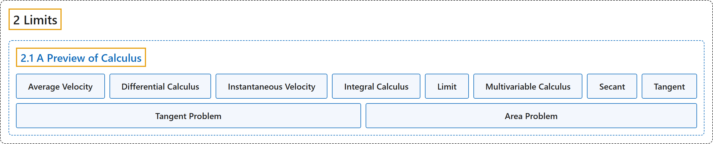

2.1 A Preview of Calculus
Classification

Glossary
| Term | Definition | 中文翻译 | Source |
|---|---|---|---|
| 2 Limits 极限 |
(No definition) | （无定义） | Strang & Herman, 2016a, chapter 2 |
| 2.1 A Preview of Calculus 微积分预览 |
(No definition) | （无定义） | Strang & Herman, 2016a, section 2.1 |
| Average Velocity 平均速度 |
"the change in an object’s position divided by the length of a time period; the average velocity of an object over a time interval \([t,a]\) (if \(t<a\) or \([a,t]\) if \(t>a)\), with a position given by \(s(t),\) that is \(v_{\text{ave}}=\frac{s(t)-s(a)}{t-a}\)" | 物体位置的变化除以时间段的长度；物体在时间区间 \([t,a]\)（若 \(t<a\)；或 \([a,t]\)，若 \(t>a)\) 上的平均速度，其位置由 \(s(t),\) 给出，即 \(v_{\text{ave}}=\frac{s(t)-s(a)}{t-a}\) | Strang & Herman, 2016a, chapter 2 Key Terms |
| Differential Calculus 微分学 |
"the field of calculus concerned with the study of derivatives and their applications" | 微积分中关注导数及其应用的研究的领域 | Strang & Herman, 2016a, chapter 2 Key Terms |
| Instantaneous Velocity 瞬时速度 |
"The instantaneous velocity of an object with a position function that is given by \(s(t)\) is the value that the average velocities on intervals of the form \([t,a]\) and \([a,t]\) approach as the values of t move closer to \(a,\) provided such a value exists" | 位置函数为 \(s(t)\) 的物体的瞬时速度，是当 t 的值越来越接近 \(a,\) 时，在形如 \([t,a]\) 和 \([a,t]\) 的区间上平均速度所趋近的值，前提是这样的值存在 | Strang & Herman, 2016a, chapter 2 Key Terms |
| Integral Calculus 积分学 |
"the study of integrals and their applications" | 积分及其应用的研究 | Strang & Herman, 2016a, chapter 2 Key Terms |
| Limit 极限 |
"the process of letting x or t approach a in an expression; the limit of a function \(f(x)\) as x approaches a is the value that \(f(x)\) approaches as x approaches a" | 在表达式中让 x 或 t 趋近 a 的过程；当 x 趋近 a 时函数 \(f(x)\) 的极限，是 x 趋近 a 时 \(f(x)\) 所趋近的值 | Strang & Herman, 2016a, chapter 2 Key Terms |
| Multivariable Calculus 多元微积分 |
"the study of the calculus of functions of two or more variables" | 对两个或更多变量的函数的微积分研究 | Strang & Herman, 2016a, chapter 2 Key Terms |
| Secant 割线 |
"A secant line to a function \(f(x)\) at a is a line through the point \((a,f(a))\) and another point on the function; the slope of the secant line is given by \(m_{\text{sec}}=\frac{f(x)-f(a)}{x-a}\)" | 函数 \(f(x)\) 在 a 处的割线是经过点 \((a,f(a))\) 和函数上另一点的直线；割线的斜率为 \(m_{\text{sec}}=\frac{f(x)-f(a)}{x-a}\) | Strang & Herman, 2016a, chapter 2 Key Terms |
| Tangent 切线 |
"A tangent line to the graph of a function at a point \((a,f(a))\) is the line that secant lines through \((a,f(a))\) approach as they are taken through points on the function with x-values that approach a; the slope of the tangent line to a graph at a measures the rate of change of the function at a" | 函数图像在点 \((a,f(a))\) 处的切线，是当所取函数上的点的 x 值趋近 a 时，经过 \((a,f(a))\) 的割线所趋近的直线；图像在 a 处切线的斜率度量函数在 a 处的变化率 | Strang & Herman, 2016a, chapter 2 Key Terms |
| Tangent Problem 切线问题 |
"Solving the Tangent Problem: As x approaches a, the secant lines approach the tangent line." | 解决切线问题：当 x 趋近 a 时，割线趋近切线。 | Strang & Herman, 2016a, section 2.1 |
| Area Problem 面积问题 |
"The Area Problem: How do we find the area of the shaded region?" | 面积问题：我们如何求阴影区域的面积？ | Strang & Herman, 2016a, section 2.1 |
References
Strang, G., & Herman, E. (2016a). Calculus volume 1. OpenStax. Retrieved October 29, 2026, from https://openstax.org/details/books/calculus-volume-1